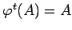
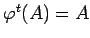
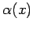
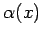
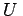
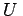

Inhalt Index DeskTop Bronstein

 Dynamische Systeme und Chaos Gewöhnliche Differentialgleichungen und Abbildungen Dynamische Systeme Invariante Mengen
Dynamische Systeme und Chaos Gewöhnliche Differentialgleichungen und Abbildungen Dynamische Systeme Invariante Mengen


Sei  ein dynamisches System auf dem emtrischen Raum
ein dynamisches System auf dem emtrischen Raum  . Die Menge
. Die Menge  heißt invariant unter
heißt invariant unter  , falls  für alle
, falls  für alle  ist, und positiv invariant unter
ist, und positiv invariant unter  , falls für alle
, falls für alle  aus
aus  ist.
ist.
Für jedes  ist die -Grenzmenge des Orbits durch x die Menge
ist die -Grenzmenge des Orbits durch x die Menge
| (17.7) |
Die Elemente von  heißen -Grenzpunkte des Orbits. Liegt ein invertierbares dynamisches System vor, so heißt für jedes
heißen -Grenzpunkte des Orbits. Liegt ein invertierbares dynamisches System vor, so heißt für jedes  die Menge
die Menge
| (17.8) |
 -Grenzmenge des Orbits durch x; die Elemente von  heißen
-Grenzmenge des Orbits durch x; die Elemente von  heißen  -Grenzpunkte des Orbits.
-Grenzpunkte des Orbits.
Die lokale Eigenschaft des Volumenschrumpfens führt bei vielen Systemen zur Existenz einer beschränkten Menge im Phasenraum, in die alle Orbits für wachsende Zeiten gelangen und dort verbleiben. Eine beschränkte, offene und zusammenhängende Menge  heißt absorbierend bezüglich
heißt absorbierend bezüglich  , falls für alle positiven t aus
, falls für alle positiven t aus  ist. (
ist. ( ist die Abschließung von .)
ist die Abschließung von .)
| Beispiel |
|
Gegeben sei in der Ebene das Differentialgleichungssystem |
Unter Verwendung von Polarkoordinaten läßt sich die Lösung von (17.9a) mit Anfang zur Zeit t = 0 in der Form
| (17.9b) |
schreiben. Aus dieser Lösungsdarstellung folgt, daß der Fluß von (17.9a) einen  -periodischen Orbit besitzt, der als dargestellt werden kann. Für die Grenzmengen der Orbits durch p gilt
-periodischen Orbit besitzt, der als dargestellt werden kann. Für die Grenzmengen der Orbits durch p gilt